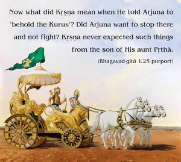

In the presence of Bhīṣma, Droṇa and all the other chieftains of the world, the Lord said, “Just behold, Pārtha, all the Kurus assembled here.”

As the Supersoul of all living entities, Lord Kṛṣṇa could understand what was going on in the mind of Arjuna. The use of the word Hṛṣīkeśa in this connection indicates that He knew everything. And the word Pārtha, meaning “the son of Pṛthā, or Kuntī,” is also similarly significant in reference to Arjuna. As a friend, He wanted to inform Arjuna that because Arjuna was the son of Pṛthā, the sister of His own father Vasudeva, He had agreed to be the charioteer of Arjuna. Now what did Kṛṣṇa mean when He told Arjuna to “behold the Kurus”? Did Arjuna want to stop there and not fight? Kṛṣṇa never expected such things from the son of His aunt Pṛthā. The mind of Arjuna was thus predicted by the Lord in friendly joking.